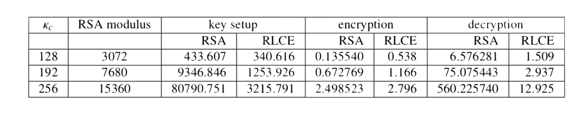
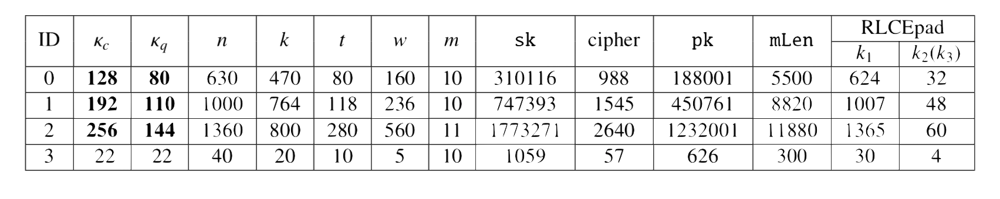
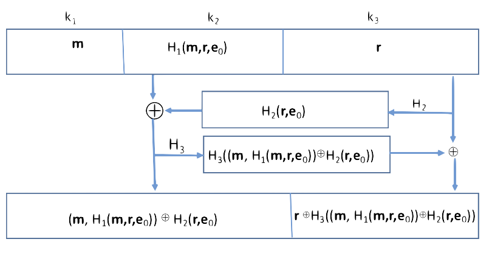

We develop post-quantum (or quantum resistant) public key encryption techniques. Our first implementation is based on the Random Linear Code Based Public Key Encryption Shceme (RLCE) which was recently introduced by Dr. Yongge Wang. The full package (including library and C codes for key generation, encryption, and decryption) is
available at here: GitHub
Publications
The following Table shows the comparison of the RLCE performance against OpenSSL RSA performance. Both RSA
and RLCE were tested with a MacOS Sierra on a MacBook Pro with 2.9 GHz Intel Core i7. The time is in miliseconds.
The following Table lists the parameters for the RLCE encryption scheme with equivalent AES-128, AES-192, and AES-256 security levels. The Tabble also lists the sizes for the corresponding public key, private key, and message bandwidth
Tools and Software for Download
RLCE Performance

RLCE Parameters

where the values in the RLCEpad column are from the following padding scheme

Public keys and ciphertext for you to decrypt